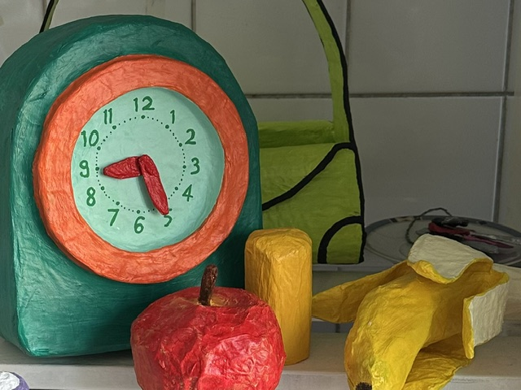
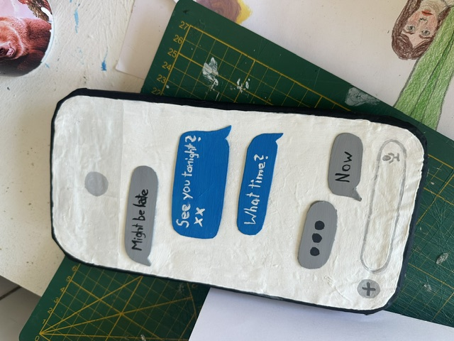

Une performance autour de sculptures représentant des objets du quotidien, qui revient sur un moment que nous avons tous vécu d'innombrables fois : attendre une réponse, une confirmation, un signe que quelque chose pourrait arriver. En français, le mot « attente » désigne à la fois le fait d'attendre et l'espoir que l'on place en quelqu'un, dans une relation ou dans la vie elle-même. Les yeux rivés sur nos téléphones, nous sommes constamment en train d'attendre quelque chose. L'attente est devenue un élément central de notre quotidien, presque un rituel familier. Mais que devient tout ce temps passé à attendre ? A travers la frustration, l'attente peut aussi devenir une force créative.

